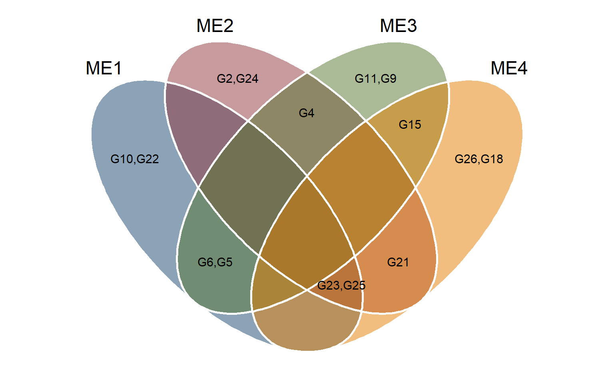

Analysis
1 Libraries
To reproduce the examples of this material, the R packages the following packages are needed.
# it is suggested to use the dev version of metan package
# remotes::install_github("TiagoOlivoto/metan")
library(EnvRtype)
library(rio)
library(factoextra)
library(FactoMineR)
library(ggrepel)
library(ggh4x)
library(superheat)
library(ggridges)
library(metan)
library(rnaturalearth)
library(lme4)
library(lmerTest)
library(broom.mixed)
library(tidyverse)
library(ggsn)
# a ggplot2 theme for the plots
my_theme <-
theme_bw() +
theme(panel.spacing = unit(0, "cm"),
panel.grid = element_blank(),
legend.position = "bottom")2 Dataset
df_traits <-
import("data/df_traits.csv") |>
metan::as_factor(1:6)
# long data
df_traits_long <-
df_traits |>
pivot_longer(GMC:HSW)
# grain yield mean in each environment
df_gy <-
df_traits |>
mean_by(ME, YEAR, .vars = GY)
# genotypic variance in each mega-environment
df_var_gy <-
df_traits |>
group_by(YEAR, ME) |>
do(lmer(GY ~(1|GEN), data = .) |>
tidy(effects = "ran_pars") |>
filter(group == "GEN") |>
transmute(var = estimate^2))3 Location map
china <-
ne_states(country = c("china", "taiwan"),
returnclass = "sf")
locs <-
import("https://bit.ly/local_info") %>%
distinct(Lat, .keep_all = TRUE)
china <-
mutate(china,
Province = ifelse(name %in% locs$Province, name, NA))
png("figs/fig1_map1.jpeg", width = 10, height = 7, units = "in", res = 600)
ggplot(data = china) +
geom_sf(aes(fill = Province), size = 0.2) +
ggthemes::theme_map() +
scale_fill_discrete(na.value = "gray97",
labels = c(unique(locs$Province), "others")) +
theme(legend.position = "none")
dev.off()
## png
## 2
png("figs/fig1_map2.jpeg", width = 10, height = 7, units = "in", res = 600)
zoom <-
ggplot(data = china) +
geom_sf(aes(fill = Province), size = 0.2) +
ggthemes::theme_map() +
scale_fill_discrete(na.value = "gray97",
labels = c(unique(locs$Province), "others")) +
geom_point(data = locs,
aes(x = Lon, y = Lat, size = Altitude),
color = "black",
fill = "red",
shape = 21) +
geom_label_repel(data = locs,
aes(label = Location,
x = Lon,
y = Lat),
fill = "green",
color = "black",
segment.color = 'black',
force = 38,
size = 4) +
theme(legend.position = c(0.95, 0.1)) +
theme_minimal() +
theme(legend.position = c(.95, 0.55)) +
scalebar(dist = 200,
x.min = 109,
x.max = 128,
y.min = 29.5,
y.max = 42,
dist_unit = "km",
transform = TRUE,
model = "WGS84") +
xlim(c(109, 128)) +
ylim(c(28, 42)) +
labs(x = "Longitude",
y = "Latitude")
north2(zoom, 0.9, .1)
dev.off()
## png
## 24 Mega-environment delineation
4.1 20-year climate data
df_years <- import("data/me_delineation.csv")
ENV <- df_years$Code
LAT <- df_years$Lat
LON <- df_years$Lon
ALT <- df_years$Alt
START <- df_years$Sowing
END <- df_years$Harvesting
# see more at https://github.com/allogamous/EnvRtype
df_climate <-
get_weather(env.id = ENV,
lat = LAT,
lon = LON,
start.day = START,
end.day = END,
parallel = TRUE)
# GDD: Growing Degree Day (oC/day)
# FRUE: Effect of temperature on radiation use efficiency (from 0 to 1)
# T2M_RANGE: Daily Temperature Range (oC day)
# SPV: Slope of saturation vapour pressure curve (kPa.Celsius)
# VPD: Vapour pressure deficit (kPa)
# ETP: Potential Evapotranspiration (mm.day)
# PEPT: Deficit by Precipitation (mm.day)
# n: Actual duration of sunshine (hour)
# N: Daylight hours (hour)
# RTA: Extraterrestrial radiation (MJ/m^2/day)
# T2M: Temperature at 2 Meters
# T2M_MAX: Maximum Temperature at 2 Meters
# T2M_MIN: Minimum Temperature at 2 Meters
# PRECTOT: Precipitation
# WS2M: Wind Speed at 2 Meters
# RH2M: Relative Humidity at 2 Meters
# T2MDEW: Dew/Frost Point at 2 Meters
# ALLSKY_SFC_LW_DWN: Downward Thermal Infrared (Longwave) Radiative Flux
# ALLSKY_SFC_SW_DWN: All Sky Insolation Incident on a Horizontal Surface
# ALLSKY_TOA_SW_DWN: Top-of-atmosphere Insolation
# [1] "env" "ETP" "GDD" "PETP" "RH2M" "SPV"
# [8] "T2M" "T2M_MAX" "T2M_MIN" "T2M_RANGE" "T2MDEW" "VPD"
# Compute other parameters
env_data <-
df_climate %>%
as.data.frame() %>%
param_temperature(Tbase1 = 10, # choose the base temperature here
Tbase2 = 33, # choose the base temperature here
merge = TRUE) %>%
param_atmospheric(merge = TRUE) %>%
param_radiation(merge = TRUE) |>
separate(env, into = c("env", "year"), sep = "_") |>
rename(TMAX = T2M_MAX,
TMIN = T2M_MIN,
ASKLW = ALLSKY_SFC_LW_DWN,
ASKSW = ALLSKY_SFC_SW_DWN,
TRANGE = T2M_RANGE)env_data <- readRDS("data/env_data.Rdata")
info <-
env_data |>
dplyr::select(env, LON, LAT) |>
mean_by(env)
df_gy_loc <-
df_traits |>
mean_by(LOC, .vars = GY)
env_wider <-
env_data |>
select(env, year, daysFromStart, TMED:RTA) |>
pivot_wider(names_from = "year",
values_from = TMED:RTA) |>
left_join(info) |>
relocate(LON, LAT, .after = env) |>
mutate(MM = 1,
DD = 1,
DOY = 1,
YYYYMMDD = 1,
YEAR = 1,
.after = env)
saveRDS(env_wider, "data/env_wider.Rdata")4.2 Environmental kinships
id_var <- names(env_wider)[10:ncol(env_wider)]
EC <-
W_matrix(env.data = env_wider,
env.id = "env",
var.id = id_var,
by.interval = TRUE,
time.window = c(0, 30, 60, 90, 120, 150),
QC = TRUE,
sd.tol = 3)
## ------------------------------------------------
## Quality Control based on sd.tol=3
## Removed variables:
## 271 from 2280
## DTIRF_2001_mean_Interval_0
## DTIRF_2001_mean_Interval_30
## DTIRF_2001_mean_Interval_60
## DTIRF_2001_mean_Interval_90
## DTIRF_2001_mean_Interval_120
## DTIRF_2001_mean_Interval_150
## DTIRF_2002_mean_Interval_0
## DTIRF_2002_mean_Interval_30
## DTIRF_2002_mean_Interval_60
## DTIRF_2002_mean_Interval_90
## DTIRF_2002_mean_Interval_120
## DTIRF_2002_mean_Interval_150
## DTIRF_2003_mean_Interval_0
## DTIRF_2003_mean_Interval_30
## DTIRF_2003_mean_Interval_60
## DTIRF_2003_mean_Interval_90
## DTIRF_2003_mean_Interval_120
## DTIRF_2003_mean_Interval_150
## DTIRF_2004_mean_Interval_0
## DTIRF_2004_mean_Interval_30
## DTIRF_2004_mean_Interval_60
## DTIRF_2004_mean_Interval_90
## DTIRF_2004_mean_Interval_120
## DTIRF_2004_mean_Interval_150
## DTIRF_2005_mean_Interval_0
## DTIRF_2005_mean_Interval_30
## DTIRF_2005_mean_Interval_60
## DTIRF_2005_mean_Interval_90
## DTIRF_2005_mean_Interval_120
## DTIRF_2005_mean_Interval_150
## DTIRF_2006_mean_Interval_0
## DTIRF_2006_mean_Interval_30
## DTIRF_2006_mean_Interval_60
## DTIRF_2006_mean_Interval_90
## DTIRF_2006_mean_Interval_120
## DTIRF_2006_mean_Interval_150
## DTIRF_2007_mean_Interval_0
## DTIRF_2007_mean_Interval_30
## DTIRF_2007_mean_Interval_60
## DTIRF_2007_mean_Interval_90
## DTIRF_2007_mean_Interval_120
## DTIRF_2007_mean_Interval_150
## DTIRF_2008_mean_Interval_0
## DTIRF_2008_mean_Interval_30
## DTIRF_2008_mean_Interval_60
## DTIRF_2008_mean_Interval_90
## DTIRF_2008_mean_Interval_120
## DTIRF_2008_mean_Interval_150
## DTIRF_2009_mean_Interval_0
## DTIRF_2009_mean_Interval_30
## DTIRF_2009_mean_Interval_60
## DTIRF_2009_mean_Interval_90
## DTIRF_2009_mean_Interval_120
## DTIRF_2009_mean_Interval_150
## DTIRF_2010_mean_Interval_0
## DTIRF_2010_mean_Interval_30
## DTIRF_2010_mean_Interval_60
## DTIRF_2010_mean_Interval_90
## DTIRF_2010_mean_Interval_120
## DTIRF_2010_mean_Interval_150
## DTIRF_2011_mean_Interval_0
## DTIRF_2011_mean_Interval_30
## DTIRF_2011_mean_Interval_60
## DTIRF_2011_mean_Interval_90
## DTIRF_2011_mean_Interval_120
## DTIRF_2011_mean_Interval_150
## DTIRF_2012_mean_Interval_0
## DTIRF_2012_mean_Interval_30
## DTIRF_2012_mean_Interval_60
## DTIRF_2012_mean_Interval_90
## DTIRF_2012_mean_Interval_120
## DTIRF_2012_mean_Interval_150
## DTIRF_2013_mean_Interval_0
## DTIRF_2013_mean_Interval_30
## DTIRF_2013_mean_Interval_60
## DTIRF_2013_mean_Interval_90
## DTIRF_2013_mean_Interval_120
## DTIRF_2013_mean_Interval_150
## DTIRF_2014_mean_Interval_0
## DTIRF_2014_mean_Interval_30
## DTIRF_2014_mean_Interval_60
## DTIRF_2014_mean_Interval_90
## DTIRF_2014_mean_Interval_120
## DTIRF_2014_mean_Interval_150
## DTIRF_2015_mean_Interval_0
## DTIRF_2015_mean_Interval_30
## DTIRF_2015_mean_Interval_60
## DTIRF_2015_mean_Interval_90
## DTIRF_2015_mean_Interval_120
## DTIRF_2015_mean_Interval_150
## DTIRF_2016_mean_Interval_0
## DTIRF_2016_mean_Interval_30
## DTIRF_2016_mean_Interval_60
## DTIRF_2016_mean_Interval_90
## DTIRF_2016_mean_Interval_120
## DTIRF_2016_mean_Interval_150
## DTIRF_2017_mean_Interval_0
## DTIRF_2017_mean_Interval_30
## DTIRF_2017_mean_Interval_60
## DTIRF_2017_mean_Interval_90
## DTIRF_2017_mean_Interval_120
## DTIRF_2017_mean_Interval_150
## DTIRF_2018_mean_Interval_0
## DTIRF_2018_mean_Interval_30
## DTIRF_2018_mean_Interval_60
## DTIRF_2018_mean_Interval_90
## DTIRF_2018_mean_Interval_120
## DTIRF_2018_mean_Interval_150
## DTIRF_2019_mean_Interval_0
## DTIRF_2019_mean_Interval_30
## DTIRF_2019_mean_Interval_60
## DTIRF_2019_mean_Interval_90
## DTIRF_2019_mean_Interval_120
## DTIRF_2019_mean_Interval_150
## DTIRF_2020_mean_Interval_0
## DTIRF_2020_mean_Interval_30
## DTIRF_2020_mean_Interval_60
## DTIRF_2020_mean_Interval_90
## DTIRF_2020_mean_Interval_120
## DTIRF_2020_mean_Interval_150
## PETP_2002_mean_Interval_0
## PETP_2003_mean_Interval_60
## PETP_2005_mean_Interval_60
## PETP_2006_mean_Interval_60
## PETP_2007_mean_Interval_60
## PETP_2010_mean_Interval_90
## PETP_2013_mean_Interval_60
## PETP_2015_mean_Interval_30
## PETP_2017_mean_Interval_120
## PETP_2018_mean_Interval_0
## PETP_2018_mean_Interval_90
## PETP_2019_mean_Interval_90
## PETP_2020_mean_Interval_30
## PETP_2020_mean_Interval_60
## PETP_2020_mean_Interval_90
## PRECTOT_2003_mean_Interval_60
## PRECTOT_2005_mean_Interval_60
## PRECTOT_2007_mean_Interval_60
## PRECTOT_2017_mean_Interval_120
## PRECTOT_2020_mean_Interval_30
## PRECTOT_2020_mean_Interval_60
## RH_2001_mean_Interval_0
## RH_2001_mean_Interval_30
## RH_2001_mean_Interval_60
## RH_2001_mean_Interval_90
## RH_2001_mean_Interval_120
## RH_2001_mean_Interval_150
## RH_2002_mean_Interval_0
## RH_2002_mean_Interval_30
## RH_2002_mean_Interval_60
## RH_2002_mean_Interval_90
## RH_2002_mean_Interval_120
## RH_2002_mean_Interval_150
## RH_2003_mean_Interval_0
## RH_2003_mean_Interval_30
## RH_2003_mean_Interval_60
## RH_2003_mean_Interval_90
## RH_2003_mean_Interval_120
## RH_2003_mean_Interval_150
## RH_2004_mean_Interval_0
## RH_2004_mean_Interval_30
## RH_2004_mean_Interval_60
## RH_2004_mean_Interval_90
## RH_2004_mean_Interval_120
## RH_2004_mean_Interval_150
## RH_2005_mean_Interval_0
## RH_2005_mean_Interval_30
## RH_2005_mean_Interval_60
## RH_2005_mean_Interval_90
## RH_2005_mean_Interval_120
## RH_2005_mean_Interval_150
## RH_2006_mean_Interval_0
## RH_2006_mean_Interval_30
## RH_2006_mean_Interval_60
## RH_2006_mean_Interval_90
## RH_2006_mean_Interval_120
## RH_2006_mean_Interval_150
## RH_2007_mean_Interval_0
## RH_2007_mean_Interval_30
## RH_2007_mean_Interval_60
## RH_2007_mean_Interval_90
## RH_2007_mean_Interval_120
## RH_2007_mean_Interval_150
## RH_2008_mean_Interval_0
## RH_2008_mean_Interval_30
## RH_2008_mean_Interval_60
## RH_2008_mean_Interval_90
## RH_2008_mean_Interval_120
## RH_2008_mean_Interval_150
## RH_2009_mean_Interval_0
## RH_2009_mean_Interval_30
## RH_2009_mean_Interval_60
## RH_2009_mean_Interval_90
## RH_2009_mean_Interval_150
## RH_2010_mean_Interval_0
## RH_2010_mean_Interval_30
## RH_2010_mean_Interval_60
## RH_2010_mean_Interval_90
## RH_2010_mean_Interval_150
## RH_2011_mean_Interval_0
## RH_2011_mean_Interval_30
## RH_2011_mean_Interval_60
## RH_2011_mean_Interval_90
## RH_2011_mean_Interval_150
## RH_2012_mean_Interval_0
## RH_2012_mean_Interval_30
## RH_2012_mean_Interval_60
## RH_2012_mean_Interval_90
## RH_2012_mean_Interval_150
## RH_2013_mean_Interval_0
## RH_2013_mean_Interval_30
## RH_2013_mean_Interval_60
## RH_2013_mean_Interval_90
## RH_2013_mean_Interval_120
## RH_2013_mean_Interval_150
## RH_2014_mean_Interval_0
## RH_2014_mean_Interval_30
## RH_2014_mean_Interval_60
## RH_2014_mean_Interval_90
## RH_2014_mean_Interval_120
## RH_2014_mean_Interval_150
## RH_2015_mean_Interval_0
## RH_2015_mean_Interval_30
## RH_2015_mean_Interval_60
## RH_2015_mean_Interval_90
## RH_2015_mean_Interval_120
## RH_2015_mean_Interval_150
## RH_2016_mean_Interval_0
## RH_2016_mean_Interval_30
## RH_2016_mean_Interval_60
## RH_2016_mean_Interval_90
## RH_2016_mean_Interval_120
## RH_2016_mean_Interval_150
## RH_2017_mean_Interval_0
## RH_2017_mean_Interval_30
## RH_2017_mean_Interval_60
## RH_2017_mean_Interval_90
## RH_2017_mean_Interval_120
## RH_2017_mean_Interval_150
## RH_2018_mean_Interval_0
## RH_2018_mean_Interval_30
## RH_2018_mean_Interval_60
## RH_2018_mean_Interval_90
## RH_2018_mean_Interval_120
## RH_2018_mean_Interval_150
## RH_2019_mean_Interval_0
## RH_2019_mean_Interval_30
## RH_2019_mean_Interval_60
## RH_2019_mean_Interval_90
## RH_2019_mean_Interval_120
## RH_2019_mean_Interval_150
## RH_2020_mean_Interval_0
## RH_2020_mean_Interval_30
## RH_2020_mean_Interval_60
## RH_2020_mean_Interval_90
## RH_2020_mean_Interval_120
## RH_2020_mean_Interval_150
## SIHS_2014_mean_Interval_0
## SIHS_2019_mean_Interval_0
## T2MDEW_2001_mean_Interval_0
## T2MDEW_2002_mean_Interval_150
## T2MDEW_2005_mean_Interval_0
## T2MDEW_2006_mean_Interval_0
## T2MDEW_2007_mean_Interval_0
## T2MDEW_2009_mean_Interval_30
## T2MDEW_2013_mean_Interval_0
## T2MDEW_2014_mean_Interval_0
## T2MDEW_2015_mean_Interval_0
## T2MDEW_2016_mean_Interval_0
## T2MDEW_2017_mean_Interval_0
## T2MDEW_2019_mean_Interval_0
## ------------------------------------------------
saveRDS(EC, "data/EC.Rdata")4.3 Heatmap
distances <-
env_kernel(env.data = EC,
gaussian = TRUE)
d <-
superheat(distances[[2]],
heat.pal = c("#b35806", "white", "#542788"),
pretty.order.rows = TRUE,
pretty.order.cols = TRUE,
col.dendrogram = TRUE,
legend.width = 4,
left.label.size = 0.1,
bottom.label.text.size = 5,
bottom.label.size = 0.2,
bottom.label.text.angle = 90,
legend.text.size = 17,
heat.lim = c(0, 1),
padding = 0.5,
legend.height=0.2)Figure 4.1: Similarity
ggsave(filename = "figs/fig2_heat_env2.pdf",
plot = d$plot,
width = 11,
height = 10)
env_data <-
env_data |>
mutate(me = case_when(
env %in% c("Yicheng") ~ "ME1",
env %in% c("Suixi", "Jieshou", "Nanyang") ~ "ME2",
env %in% c("Shenzhou", "Gaocheng", "Handan", "Dezhou") ~ "ME3",
env %in% c("Laizhou", "Jinan") ~ "ME4"
),
.after = env)4.4 Principal component analysis
env_data_m <-
env_data |>
select(-daysFromStart) |>
mean_by(me, .vars = TMED:RTA) |>
column_to_rownames("me")
# compute the PCA with
pca_model_h <- PCA(env_data_m,
graph = FALSE)
bp1 <-
fviz_pca_biplot(pca_model_h,
repel = TRUE,
col.var = "steelblue",
title = NULL) +
coord_equal() +
labs(title = "Long-term weather (20 years)")5 Climate variables (trials)
5.1 Getting the data
df_env <- import("data/location_info.csv")
ENV <- df_env$Code
LAT <- df_env$Lat
LON <- df_env$Lon
ALT <- df_env$Alt
START <- df_env$Sowing
END <- df_env$Harvesting
# see more at https://github.com/allogamous/EnvRtype
df_climate <-
get_weather(env.id = ENV,
lat = LAT,
lon = LON,
start.day = START,
end.day = END)
# GDD: Growing Degree Day (oC/day)
# FRUE: Effect of temperature on radiation use efficiency (from 0 to 1)
# T2M_RANGE: Daily Temperature Range (oC day)
# SPV: Slope of saturation vapour pressure curve (kPa.Celsius)
# VPD: Vapour pressure deficit (kPa)
# ETP: Potential Evapotranspiration (mm.day)
# PEPT: Deficit by Precipitation (mm.day)
# n: Actual duration of sunshine (hour)
# N: Daylight hours (hour)
# RTA: Extraterrestrial radiation (MJ/m^2/day)
# SRAD: Solar radiation (MJ/m^2/day)
# T2M: Temperature at 2 Meters
# T2M_MAX: Maximum Temperature at 2 Meters
# T2M_MIN: Minimum Temperature at 2 Meters
# PRECTOT: Precipitation
# WS2M: Wind Speed at 2 Meters
# RH2M: Relative Humidity at 2 Meters
# T2MDEW: Dew/Frost Point at 2 Meters
# ALLSKY_SFC_LW_DWN: Downward Thermal Infrared (Longwave) Radiative Flux
# ALLSKY_SFC_SW_DWN: All Sky Insolation Incident on a Horizontal Surface
# ALLSKY_TOA_SW_DWN: Top-of-atmosphere Insolation
# [1] "env" "ETP" "GDD" "PETP" "RH2M" "SPV"
# [8] "T2M" "T2M_MAX" "T2M_MIN" "T2M_RANGE" "T2MDEW" "VPD"
# Compute other parameters
env_data <-
df_climate %>%
as.data.frame() %>%
param_temperature(Tbase1 = 10, # choose the base temperature here
Tbase2 = 33, # choose the base temperature here
merge = TRUE) %>%
param_atmospheric(merge = TRUE) %>%
param_radiation(merge = TRUE) |>
rename(DTIRF = ALLSKY_SFC_LW_DWN,
SIHS = ALLSKY_SFC_SW_DWN,
TMIN = T2M_MIN,
TMAX = T2M_MAX,
TMED = T2M,
RH = RH2M,
WS = WS2M,
TRANGE = T2M_RANGE) |>
separate(env, into = c("ENV", "YEAR")) |>
relocate(daysFromStart, .before = TMED) |>
mutate(ME = case_when(
ENV %in% c("Yicheng") ~ "ME1",
ENV %in% c("Suixi", "Jieshou", "Nanyang") ~ "ME2",
ENV %in% c("Shenzhou", "Gaocheng", "Handan", "Dezhou") ~ "ME3",
ENV %in% c("Laizhou", "Jinan") ~ "ME4"
),
.after = ENV)
export(env_data, "data/env_data_trial.xlsx")5.2 Tidy climate data
env_data_trial <- import("data/env_data_trial.xlsx")5.3 Principal component analysis
names_var <- names(env_data_trial)[11:ncol(env_data_trial)]
pca_2019 <-
env_data_trial |>
mean_by(ME, YEAR, .vars = names_var) |>
metan::as_factor(1:2) |>
left_join(df_gy) |>
left_join(df_var_gy) |>
filter(YEAR == 2019) |>
left_join(df_gy) |>
left_join(df_var_gy) |>
remove_cols(YEAR) |>
column_to_rownames("ME")
pca_2020 <-
env_data_trial |>
mean_by(ME, YEAR, .vars = names_var) |>
metan::as_factor(1:2) |>
left_join(df_gy) |>
left_join(df_var_gy) |>
filter(YEAR == 2020) |>
left_join(df_gy) |>
left_join(df_var_gy) |>
remove_cols(YEAR) |>
column_to_rownames("ME")
pca2 <-
env_data_trial |>
mean_by(ME, .vars = names_var) |>
left_join(df_gy |> mean_by(ME)) |>
left_join(df_var_gy|> mean_by(ME)) |>
column_to_rownames("ME")
# compute the PCA with
pca2019 <- PCA(pca_2019, graph = FALSE)
pca2020 <- PCA(pca_2020, graph = FALSE)
pca_model2 <- PCA(pca2, graph = FALSE)
bip1 <-
fviz_pca_biplot(pca2019,
repel = TRUE,
col.var = "steelblue",
title = NULL) +
coord_equal() +
labs(title = "Data for 2019 trials")
bip2 <-
fviz_pca_biplot(pca2020,
repel = TRUE,
col.var = "steelblue",
title = NULL) +
coord_equal() +
labs(title = "Data for 2020 trials")
bip3 <-
fviz_pca_biplot(pca_model2,
repel = TRUE,
col.var = "steelblue",
title = NULL) +
coord_equal() +
labs(title = "Average data")
arrange_ggplot(bp1, bip1, bip2, bip3,
tag_levels = "A")
Figure 5.1: biplot for PCA
ggsave("figs/fig3_pca.jpeg", width = 11, height = 11)5.4 Environmental tipology (vapor pressure deficit)
names.window <- c('1-intial growing','2-leaf expansion I','3-leaf expansion II','4-flowering','5-grain filling', "")
out <-
env_data_trial |>
concatenate(ME, YEAR, .after = YEAR, new_var = env) |>
env_typing(env.id = c("YEAR, ME"),
var.id = names_var,
by.interval = TRUE,
time.window = c(0, 15, 35, 65, 90, 120),
names.window = names.window,
quantiles = c(.01, .25, .50, .75, .975, .99)) |>
separate(env, into = c("ME", "YEAR")) |>
separate(env.variable,
into = c("var", "freq"),
sep = "_",
extra = "drop")# plot the distribution of envirotypes for dbp
variable <- "VPD"
p1 <-
out |>
subset(var == variable) |> # change the variable here
# mutate()
ggplot() +
geom_bar(aes(x=Freq, y=ME,fill=freq),
position = "fill",
stat = "identity",
width = 1,
color = "white",
size=.2)+
facet_grid(YEAR~interval, scales = "free", space = "free")+
scale_y_discrete(expand = c(0,0))+
scale_x_continuous(expand = c(0,0))+
labs(x = 'Relative frequency for vapor pressure deficit',
y = "Mega-Environment",
fill='Envirotype')+
theme(axis.title = element_text(size=12),
legend.text = element_text(size=9),
strip.text = element_text(size=12),
legend.title = element_text(size=12),
strip.background = element_rect(fill="gray95",size=1)) +
ggthemes::scale_fill_stata()
# plot the distribution of envirotypes for dbp
variable <- "PETP"
p2 <-
out |>
subset(var == variable) |> # change the variable here
mutate(freq = as_factor(freq),
freq = fct_relevel(freq, "(-13.1,-9.95]", "(-9.95,-7.54]",
"(-7.54,-2.13]", "(-2.13,31.5]",
"(31.5,47.8]" )) |>
ggplot() +
geom_bar(aes(x=Freq, y=ME,fill=freq),
position = "fill",
stat = "identity",
width = 1,
color = "white",
size=.2) +
facet_grid(YEAR~interval) +
scale_y_discrete(expand = c(0,0))+
scale_x_continuous(expand = c(0,0))+
labs(x = 'Relative frequency for deficit by precipitation',
y = "Mega-Environment",
fill='Envirotype')+
theme(axis.title = element_text(size=12),
legend.text = element_text(size=9),
strip.text = element_text(size=12),
legend.title = element_text(size=12),
strip.background = element_rect(fill="gray95",size=1)) +
ggthemes::scale_fill_stata()
# plot the distribution of envirotypes for dbp
variable <- "TMIN"
p3 <-
out |>
subset(var == variable) |> # change the variable here
# mutate()
ggplot() +
geom_bar(aes(x=Freq, y=ME,fill=freq),
position = "fill",
stat = "identity",
width = 1,
color = "white",
size=.2) +
facet_grid(YEAR~interval) +
scale_y_discrete(expand = c(0,0))+
scale_x_continuous(expand = c(0,0))+
labs(x = 'Relative frequency',
y = "Mega-Environment",
fill='Envirotype')+
theme(axis.title = element_text(size=12),
legend.text = element_text(size=9),
strip.text = element_text(size=12),
legend.title = element_text(size=12),
strip.background = element_rect(fill="gray95",size=1)) +
ggthemes::scale_fill_stata()
# plot the distribution of envirotypes for dbp
variable <- "TMAX"
p4 <-
out |>
subset(var == variable) |> # change the variable here
# mutate()
ggplot() +
geom_bar(aes(x=Freq, y=ME,fill=freq),
position = "fill",
stat = "identity",
width = 1,
color = "white",
size=.2) +
facet_grid(YEAR~interval) +
scale_y_discrete(expand = c(0,0))+
scale_x_continuous(expand = c(0,0))+
labs(x = 'Relative frequency',
y = "Mega-Environment",
fill='Envirotype')+
theme(axis.title = element_text(size=12),
legend.text = element_text(size=9),
strip.text = element_text(size=12),
legend.title = element_text(size=12),
strip.background = element_rect(fill="gray95",size=1)) +
ggthemes::scale_fill_stata()
arrange_ggplot(p1, p2,
ncol = 1,
tag_levels = "A")Figure 5.2: Quantiles for vapor pressure deficit (A), deficit by precipitation (B), minimum air temperature (C), and maximum air temperature (D) observed in the studied mega-environments across distinct crop stages and cultivation years.
ggsave("figs/fig4_typology_vpd.jpeg", width = 10, height = 5)6 Helper functions
# get variance components
get_vcomp <- function(model){
model |>
tidy(effects = "ran_pars") |>
mutate(variance = estimate ^ 2) |>
dplyr::select(group, variance)
}
# get lrt
get_lrt <- function(model){
model |>
ranova() |>
as.data.frame() |>
mutate(p_val = `Pr(>Chisq)`) |>
rownames_to_column("term") |>
dplyr::select(term, AIC, LRT, p_val) |>
mutate(term = str_sub(term, start = 6, end = -2))
}7 Models
# fitted models
mod <-
df_traits_long |>
group_by(name) |>
select(-REP) |>
rename(REP = REP2) |>
doo(~ lmer(value ~ (1|ME) + (1|GEN) + (1|GEN:YEAR) + (1|GEN:ME) + (1|GEN:ME:YEAR) + (1|YEAR/ME/REP),
data = .))7.0.1 lrt
lrt <-
mod |>
mutate(ranova = map(data, ~.x |> get_lrt())) |>
dplyr::select(-data) |>
unnest(ranova)
lrt_wide <-
lrt |>
dplyr::select(name, term, p_val) |>
remove_rows_na() |>
pivot_wider(names_from = name, values_from = p_val)
export(lrt_wide, "data/lrt.xlsx")7.1 variance component
# vcomp
vcomp <-
mod |>
mutate(vcomp = map(data, ~.x |> get_vcomp())) |>
dplyr::select(-data) |>
unnest(vcomp) |>
mutate(group = fct_relevel(group, "YEAR", "ME", "ME:YEAR", "GEN", "GEN:YEAR", "GEN:ME", "GEN:ME:YEAR", "REP:(ME:YEAR)", "Residual"))
vcomp_wide <-
vcomp |>
pivot_wider(names_from = name, values_from = variance)
export(vcomp_wide, "data/vcomp_wide.xlsx")
p1 <-
ggplot(vcomp, aes(name, variance, fill = group)) +
geom_bar(stat = "identity",
position = "fill",
color = "white",
width = 1) +
my_theme +
theme(legend.position = "right") +
scale_x_discrete(expand = expansion(0)) +
scale_y_continuous(expand = expansion(0),
labels = scales::label_percent()) +
ggthemes::scale_fill_stata() +
labs(x = "Traits",
y = "Percentage of the variance of phenotypic mean values (%)",
fill = "Source")
vcomp_mean <-
import("data/h_mean.xlsx") |>
pivot_longer(-group)
p2 <-
ggplot(vcomp_mean, aes(name, value, fill = group)) +
geom_bar(stat = "identity",
position = "fill",
color = "white",
width = 1) +
my_theme +
theme(legend.position = "right") +
scale_x_discrete(expand = expansion(0)) +
scale_y_continuous(expand = expansion(0),
labels = scales::label_percent()) +
ggthemes::scale_fill_stata() +
labs(x = "Traits",
y = "Percentage of the variance of a genotype mean (%)",
fill = "Source")
arrange_ggplot(p1, p2,
tag_levels = "A")ggsave("figs/fig5_vcomp.jpeg", width = 10, height = 4)8 Selecion within ME
8.1 Stability and mean performance
waas <-
df_traits_long |>
dplyr::select(-REP) |>
pivot_wider(names_from = name, values_from = value) |>
group_by(ME) |>
doo(~mps(.,
env = YEAR,
gen = GEN,
rep = REP2,
resp = GMC:HSW,
ideotype_mper = c("l, l, l, l, h, h, h, h, h"),
wmper = 70,
performance = "blueg",
stability = "ecovalence"))
## Evaluating trait GMC |===== | 11% 00:00:00
Evaluating trait PH |========== | 22% 00:00:01
Evaluating trait EH |=============== | 33% 00:00:01
Evaluating trait BTL |=================== | 44% 00:00:02
Evaluating trait GY |======================== | 56% 00:00:02
Evaluating trait EL |============================= | 67% 00:00:03
Evaluating trait ER |================================== | 78% 00:00:03
Evaluating trait GWE |====================================== | 89% 00:00:04
Evaluating trait HSW |===========================================| 100% 00:00:04
## ---------------------------------------------------------------------------
## P-values for Likelihood Ratio Test of the analyzed traits
## ---------------------------------------------------------------------------
## model GMC PH EH BTL GY EL ER GWE
## COMPLETE NA NA NA NA NA NA NA NA
## GEN 1.00e+00 0.10506 0.1631 3.95e-01 8.78e-01 1.00e+00 0.498397 7.43e-01
## GEN:ENV 7.94e-13 0.00307 0.0303 5.16e-09 1.83e-11 2.62e-09 0.000455 2.09e-06
## HSW
## NA
## 0.039493
## 0.000391
## ---------------------------------------------------------------------------
## All variables with significant (p < 0.05) genotype-vs-environment interaction
## Evaluating trait GMC |===== | 11% 00:00:00
Evaluating trait PH |========== | 22% 00:00:01
Evaluating trait EH |=============== | 33% 00:00:01
Evaluating trait BTL |=================== | 44% 00:00:02
Evaluating trait GY |======================== | 56% 00:00:03
Evaluating trait EL |============================= | 67% 00:00:03
Evaluating trait ER |================================== | 78% 00:00:04
Evaluating trait GWE |====================================== | 89% 00:00:04
Evaluating trait HSW |===========================================| 100% 00:00:05
## ---------------------------------------------------------------------------
## P-values for Likelihood Ratio Test of the analyzed traits
## ---------------------------------------------------------------------------
## model GMC PH EH BTL GY EL ER
## COMPLETE NA NA NA NA NA NA NA
## GEN 0.000199 3.23e-04 1.14e-08 3.13e-03 1.00e+00 1.04e-03 1.86e-07
## GEN:ENV 0.498566 9.27e-12 5.89e-01 5.82e-08 4.17e-19 2.77e-06 1.28e-08
## GWE HSW
## NA NA
## 0.10611 0.000219
## 0.00134 0.005713
## ---------------------------------------------------------------------------
## Variables with nonsignificant GxE interaction
## GMC EH
## ---------------------------------------------------------------------------
## Evaluating trait GMC |===== | 11% 00:00:00
Evaluating trait PH |========== | 22% 00:00:01
Evaluating trait EH |=============== | 33% 00:00:01
Evaluating trait BTL |=================== | 44% 00:00:02
Evaluating trait GY |======================== | 56% 00:00:02
Evaluating trait EL |============================= | 67% 00:00:03
Evaluating trait ER |================================== | 78% 00:00:03
Evaluating trait GWE |====================================== | 89% 00:00:04
Evaluating trait HSW |===========================================| 100% 00:00:05
## ---------------------------------------------------------------------------
## P-values for Likelihood Ratio Test of the analyzed traits
## ---------------------------------------------------------------------------
## model GMC PH EH BTL GY EL ER GWE
## COMPLETE NA NA NA NA NA NA NA NA
## GEN 0.0192 1.42e-01 1.00e+00 3.93e-01 0.0304 1.21e-05 2.46e-03 0.00268
## GEN:ENV 0.0272 5.00e-39 3.41e-54 2.63e-13 0.6837 1.00e+00 1.16e-10 0.18759
## HSW
## NA
## 0.207
## 0.275
## ---------------------------------------------------------------------------
## Variables with nonsignificant GxE interaction
## GY EL GWE HSW
## ---------------------------------------------------------------------------
## Evaluating trait GMC |===== | 11% 00:00:00
Evaluating trait PH |========== | 22% 00:00:00
Evaluating trait EH |=============== | 33% 00:00:01
Evaluating trait BTL |=================== | 44% 00:00:01
Evaluating trait GY |======================== | 56% 00:00:02
Evaluating trait EL |============================= | 67% 00:00:02
Evaluating trait ER |================================== | 78% 00:00:03
Evaluating trait GWE |====================================== | 89% 00:00:03
Evaluating trait HSW |===========================================| 100% 00:00:04
## ---------------------------------------------------------------------------
## P-values for Likelihood Ratio Test of the analyzed traits
## ---------------------------------------------------------------------------
## model GMC PH EH BTL GY EL ER
## COMPLETE NA NA NA NA NA NA NA
## GEN 3.03e-01 3.22e-06 6.33e-03 8.33e-01 9.93e-02 4.52e-02 6.33e-04
## GEN:ENV 2.74e-90 1.07e-52 6.55e-94 4.27e-44 2.07e-82 8.92e-64 1.37e-125
## GWE HSW
## NA NA
## 8.41e-01 5.12e-03
## 1.81e-115 1.14e-57
## ---------------------------------------------------------------------------
## All variables with significant (p < 0.05) genotype-vs-environment interaction8.2 Scenarios varying the weight for mean performance and stability
scenarios <-
waas %>%
mutate(scenarios = map(data, ~.x %>% wsmp))
saveRDS(scenarios, "data/scenarios.RData")8.3 Join the WAASBY for all traits
# mean performance and stability
mper <-
waas %>%
mutate(mps = map(data, ~.x %>% .[["mps_ind"]])) |>
unnest(mps) |>
dplyr::select(-data) |>
nest(data = GEN:HSW)
## MGIDI applied to the WAASBY values (all)
mgidi <-
mper |>
mutate(mgidi = map(data,
~.x |>
column_to_rownames("GEN") |>
mgidi(SI = 25,
weights = c(1,1,1,1,5,1,1,1,1))))
##
## -------------------------------------------------------------------------------
## Principal Component Analysis
## -------------------------------------------------------------------------------
## # A tibble: 9 × 4
## PC Eigenvalues `Variance (%)` `Cum. variance (%)`
## <chr> <dbl> <dbl> <dbl>
## 1 PC1 2.9 32.3 32.3
## 2 PC2 1.66 18.4 50.7
## 3 PC3 1.25 13.9 64.6
## 4 PC4 1.03 11.4 76.1
## 5 PC5 0.84 9.32 85.4
## 6 PC6 0.51 5.71 91.1
## 7 PC7 0.44 4.85 96.0
## 8 PC8 0.24 2.61 98.6
## 9 PC9 0.13 1.43 100
## -------------------------------------------------------------------------------
## Factor Analysis - factorial loadings after rotation-
## -------------------------------------------------------------------------------
## # A tibble: 9 × 7
## VAR FA1 FA2 FA3 FA4 Communality Uniquenesses
## <chr> <dbl> <dbl> <dbl> <dbl> <dbl> <dbl>
## 1 GMC -0.04 0.06 -0.82 0.15 0.7 0.3
## 2 PH -0.74 -0.13 0.44 -0.3 0.84 0.16
## 3 EH -0.88 0 -0.09 -0.08 0.78 0.22
## 4 BTL -0.34 0.23 0.79 0.09 0.8 0.2
## 5 GY -0.21 -0.89 -0.03 0.07 0.84 0.16
## 6 EL 0.36 -0.54 -0.16 0.49 0.69 0.31
## 7 ER -0.16 0.53 -0.55 0.23 0.66 0.34
## 8 GWE 0.04 -0.18 0.01 0.92 0.88 0.12
## 9 HSW 0.36 0.24 -0.24 0.63 0.65 0.35
## -------------------------------------------------------------------------------
## Comunalit Mean: 0.7607318
## -------------------------------------------------------------------------------
## Selection differential
## -------------------------------------------------------------------------------
## # A tibble: 9 × 8
## VAR Factor Xo Xs SD SDperc sense goal
## <chr> <chr> <dbl> <dbl> <dbl> <dbl> <chr> <dbl>
## 1 PH FA1 65.9 70.1 4.21 6.39 increase 100
## 2 EH FA1 64.0 69.4 5.42 8.46 increase 100
## 3 GY FA2 75.0 86.9 11.9 15.9 increase 100
## 4 EL FA2 66.4 83.1 16.8 25.3 increase 100
## 5 GMC FA3 55.1 63.2 8.08 14.7 increase 100
## 6 BTL FA3 65.1 57.8 -7.33 -11.3 increase 0
## 7 ER FA3 59.5 56.8 -2.80 -4.70 increase 0
## 8 GWE FA4 50.0 58.2 8.18 16.3 increase 100
## 9 HSW FA4 67.9 71.2 3.29 4.85 increase 100
## ------------------------------------------------------------------------------
## Selected genotypes
## -------------------------------------------------------------------------------
## G10 G23 G22 G6 G25 G5
## -------------------------------------------------------------------------------
##
## -------------------------------------------------------------------------------
## Principal Component Analysis
## -------------------------------------------------------------------------------
## # A tibble: 9 × 4
## PC Eigenvalues `Variance (%)` `Cum. variance (%)`
## <chr> <dbl> <dbl> <dbl>
## 1 PC1 2.63 29.2 29.2
## 2 PC2 1.46 16.3 45.4
## 3 PC3 1.39 15.5 60.9
## 4 PC4 1.16 12.9 73.8
## 5 PC5 0.91 10.1 83.9
## 6 PC6 0.7 7.73 91.6
## 7 PC7 0.44 4.88 96.5
## 8 PC8 0.23 2.55 99.1
## 9 PC9 0.08 0.94 100
## -------------------------------------------------------------------------------
## Factor Analysis - factorial loadings after rotation-
## -------------------------------------------------------------------------------
## # A tibble: 9 × 7
## VAR FA1 FA2 FA3 FA4 Communality Uniquenesses
## <chr> <dbl> <dbl> <dbl> <dbl> <dbl> <dbl>
## 1 GMC 0.65 0.35 -0.5 0.11 0.81 0.19
## 2 PH 0.74 -0.5 0.28 0.13 0.88 0.12
## 3 EH 0.92 -0.14 0.1 -0.05 0.88 0.12
## 4 BTL -0.1 0.45 0.55 -0.04 0.51 0.49
## 5 GY 0 0.81 0.06 -0.03 0.66 0.34
## 6 EL -0.21 0.21 -0.16 -0.86 0.86 0.14
## 7 ER -0.2 0.06 -0.87 -0.07 0.81 0.19
## 8 GWE -0.29 0.42 -0.2 0.67 0.75 0.25
## 9 HSW -0.15 0.67 -0.02 0.03 0.47 0.53
## -------------------------------------------------------------------------------
## Comunalit Mean: 0.7376805
## -------------------------------------------------------------------------------
## Selection differential
## -------------------------------------------------------------------------------
## # A tibble: 9 × 8
## VAR Factor Xo Xs SD SDperc sense goal
## <chr> <chr> <dbl> <dbl> <dbl> <dbl> <chr> <dbl>
## 1 GMC FA1 62.5 76.9 14.4 23.1 increase 100
## 2 PH FA1 61.5 47.5 -14.0 -22.8 increase 0
## 3 EH FA1 53.0 52.0 -1.01 -1.91 increase 0
## 4 GY FA2 62.5 88.3 25.8 41.3 increase 100
## 5 HSW FA2 65.2 90.6 25.4 39.0 increase 100
## 6 BTL FA3 73.6 80.9 7.32 9.94 increase 100
## 7 ER FA3 55.9 63.6 7.72 13.8 increase 100
## 8 EL FA4 56.9 61.3 4.43 7.78 increase 100
## 9 GWE FA4 57.2 66.6 9.31 16.3 increase 100
## ------------------------------------------------------------------------------
## Selected genotypes
## -------------------------------------------------------------------------------
## G25 G4 G23 G2 G21 G24
## -------------------------------------------------------------------------------
##
## -------------------------------------------------------------------------------
## Principal Component Analysis
## -------------------------------------------------------------------------------
## # A tibble: 9 × 4
## PC Eigenvalues `Variance (%)` `Cum. variance (%)`
## <chr> <dbl> <dbl> <dbl>
## 1 PC1 2.67 29.7 29.7
## 2 PC2 1.96 21.8 51.5
## 3 PC3 1.31 14.6 66.1
## 4 PC4 1.08 12.0 78.1
## 5 PC5 0.68 7.53 85.6
## 6 PC6 0.52 5.79 91.4
## 7 PC7 0.45 5.01 96.4
## 8 PC8 0.2 2.17 98.6
## 9 PC9 0.13 1.41 100
## -------------------------------------------------------------------------------
## Factor Analysis - factorial loadings after rotation-
## -------------------------------------------------------------------------------
## # A tibble: 9 × 7
## VAR FA1 FA2 FA3 FA4 Communality Uniquenesses
## <chr> <dbl> <dbl> <dbl> <dbl> <dbl> <dbl>
## 1 GMC -0.83 0.23 0.01 -0.16 0.77 0.23
## 2 PH -0.73 -0.2 -0.07 0.22 0.62 0.38
## 3 EH -0.76 0.16 0.02 0.44 0.8 0.2
## 4 BTL 0.06 -0.88 0.03 -0.03 0.78 0.22
## 5 GY -0.01 0.13 0.06 -0.91 0.85 0.15
## 6 EL -0.04 -0.18 -0.92 0.03 0.88 0.12
## 7 ER 0.08 0.81 0.27 -0.35 0.86 0.14
## 8 GWE 0.3 0.12 -0.57 -0.62 0.82 0.18
## 9 HSW 0.64 0.32 -0.33 0.18 0.65 0.35
## -------------------------------------------------------------------------------
## Comunalit Mean: 0.7809373
## -------------------------------------------------------------------------------
## Selection differential
## -------------------------------------------------------------------------------
## # A tibble: 9 × 8
## VAR Factor Xo Xs SD SDperc sense goal
## <chr> <chr> <dbl> <dbl> <dbl> <dbl> <chr> <dbl>
## 1 GMC FA1 51.6 68.5 16.9 32.7 increase 100
## 2 PH FA1 62.5 68.1 5.60 8.96 increase 100
## 3 EH FA1 51.4 51.8 0.388 0.755 increase 100
## 4 HSW FA1 73.8 59.9 -14.0 -18.9 increase 0
## 5 BTL FA2 79.2 85.1 5.90 7.45 increase 100
## 6 ER FA2 61.2 60.5 -0.764 -1.25 increase 0
## 7 EL FA3 59.3 60.8 1.49 2.52 increase 100
## 8 GY FA4 67.4 83.3 16.0 23.7 increase 100
## 9 GWE FA4 61.0 71.3 10.3 16.9 increase 100
## ------------------------------------------------------------------------------
## Selected genotypes
## -------------------------------------------------------------------------------
## G5 G11 G6 G4 G15 G9
## -------------------------------------------------------------------------------
##
## -------------------------------------------------------------------------------
## Principal Component Analysis
## -------------------------------------------------------------------------------
## # A tibble: 9 × 4
## PC Eigenvalues `Variance (%)` `Cum. variance (%)`
## <chr> <dbl> <dbl> <dbl>
## 1 PC1 2.29 25.5 25.5
## 2 PC2 1.88 20.9 46.4
## 3 PC3 1.38 15.4 61.7
## 4 PC4 1.07 11.9 73.6
## 5 PC5 0.73 8.06 81.7
## 6 PC6 0.63 7 88.7
## 7 PC7 0.51 5.61 94.3
## 8 PC8 0.32 3.59 97.9
## 9 PC9 0.19 2.09 100
## -------------------------------------------------------------------------------
## Factor Analysis - factorial loadings after rotation-
## -------------------------------------------------------------------------------
## # A tibble: 9 × 7
## VAR FA1 FA2 FA3 FA4 Communality Uniquenesses
## <chr> <dbl> <dbl> <dbl> <dbl> <dbl> <dbl>
## 1 GMC -0.58 -0.36 0.27 -0.5 0.79 0.21
## 2 PH 0 0.76 0.34 -0.31 0.78 0.22
## 3 EH -0.03 0.82 0.02 0.12 0.69 0.31
## 4 BTL 0.82 -0.31 -0.01 -0.03 0.77 0.23
## 5 GY 0.8 0.02 0.27 -0.06 0.72 0.28
## 6 EL -0.08 -0.17 0.1 0.85 0.78 0.22
## 7 ER -0.1 -0.08 -0.87 -0.1 0.79 0.21
## 8 GWE 0.59 0.05 -0.52 0.07 0.62 0.38
## 9 HSW 0.2 -0.65 0.32 0.36 0.69 0.31
## -------------------------------------------------------------------------------
## Comunalit Mean: 0.7364107
## -------------------------------------------------------------------------------
## Selection differential
## -------------------------------------------------------------------------------
## # A tibble: 9 × 8
## VAR Factor Xo Xs SD SDperc sense goal
## <chr> <chr> <dbl> <dbl> <dbl> <dbl> <chr> <dbl>
## 1 GMC FA1 57.6 44.2 -13.3 -23.2 increase 0
## 2 BTL FA1 65.0 93.7 28.7 44.2 increase 100
## 3 GY FA1 69.1 89.9 20.8 30.1 increase 100
## 4 GWE FA1 45.6 54.3 8.70 19.1 increase 100
## 5 PH FA2 59.4 59.2 -0.237 -0.399 increase 0
## 6 EH FA2 62.0 58.4 -3.60 -5.80 increase 0
## 7 HSW FA2 58.8 66.9 8.10 13.8 increase 100
## 8 ER FA3 49.0 36.4 -12.6 -25.8 increase 0
## 9 EL FA4 65.8 64.6 -1.27 -1.92 increase 0
## ------------------------------------------------------------------------------
## Selected genotypes
## -------------------------------------------------------------------------------
## G15 G25 G21 G26 G18 G23
## -------------------------------------------------------------------------------
p1 <- plot(mgidi$mgidi[[1]], SI = 25, y.lab = "MTMPS index")
p2 <- plot(mgidi$mgidi[[2]], SI = 25, y.lab = "MTMPS index")
p3 <- plot(mgidi$mgidi[[3]], SI = 25, y.lab = "MTMPS index")
p4 <- plot(mgidi$mgidi[[4]], SI = 25, y.lab = "MTMPS index")
arrange_ggplot(p1, p2, p3, p4,
guides = "collect",
tag_levels = "A",
ncol = 4)
ggsave("figs/fig6_radar.jpeg", width = 12, height = 4)
# selected genotypes
selm1 <- sel_gen(mgidi$mgidi[[1]])
selm2 <- sel_gen(mgidi$mgidi[[2]])
selm3 <- sel_gen(mgidi$mgidi[[3]])
selm4 <- sel_gen(mgidi$mgidi[[4]])
venn_plot(selm1, selm2, selm3, selm4,
names = c("ME1", "ME2", "ME3", "ME4"),
show_elements = TRUE) +
ggthemes::scale_fill_stata()
ggsave("figs/fig7_veen.jpeg", width = 6, height = 5)8.4 selection differentials for mean performance
blue_mean <-
df_traits_long |>
mean_by(name, ME, GEN, .vars = value)
ovmean <-
df_traits_long |>
mean_by(name, ME, .vars = value)
# selected
selected <-
blue_mean |>
mutate(selected = case_when(
ME == "ME1" & GEN %in% selm1 ~ "yes",
ME == "ME2" & GEN %in% selm2 ~ "yes",
ME == "ME3" & GEN %in% selm3 ~ "yes",
ME == "ME4" & GEN %in% selm4 ~ "yes",
TRUE ~ "no"
)) |>
mean_by(name, ME, selected) |>
filter(selected == "yes")
ds_mper <-
ovmean |>
rename(xo = value) |>
left_join(selected |> rename(xs = value)) |>
dplyr::select(-selected) |>
mutate(sd_perc = (xs - xo) / xo * 100,
goal = case_when(
name %in% c("BTL", "EH", "GMC", "PH") ~ "Negative desired gains",
TRUE ~ "Positive desired gains"
),
negative = ifelse(sd_perc <= 0, "Negative", "Positive"))
ggplot(ds_mper, aes(name, sd_perc)) +
geom_hline(yintercept = 0, size = 0.2) +
geom_col(aes(fill = negative),
col = "black",
size = 0.2) +
scale_y_continuous(expand = expansion(mult = 0.2)) +
facet_nested(~ME + goal, scales = "free_x") +
geom_text(aes(label = round(sd_perc, 2),
hjust = ifelse(sd_perc > 0, -0.1, 1.1),
angle = 90),
size = 3) +
labs(x = "Traits",
y = "Selection differential (%)") +
my_theme +
theme(legend.position = "bottom",
legend.title = element_blank(),
panel.grid.minor = element_blank()) +
scale_fill_manual(values = ggthemes::stata_pal()(4)[c(2, 3)])
ggsave("figs/fig8_sd_mper.jpeg", width = 14, height = 6)8.5 selection differentials for stability
stab <-
waas %>%
mutate(stab = map(data,
~.x %>% .[["stability"]] |>
rownames_to_column("GEN"))) |>
unnest(stab) |>
dplyr::select(-data) |>
pivot_longer(GMC:HSW)
stab_ovmean <-
stab |>
mean_by(name, ME, .vars = value)
# selected
selected_stab <-
stab |>
mutate(selected = case_when(
ME == "ME1" & GEN %in% selm1 ~ "yes",
ME == "ME2" & GEN %in% selm2 ~ "yes",
ME == "ME3" & GEN %in% selm3 ~ "yes",
ME == "ME4" & GEN %in% selm4 ~ "yes",
TRUE ~ "no"
)) |>
mean_by(name, ME, selected) |>
filter(selected == "yes")
ds_stab <-
stab_ovmean |>
rename(xo = value) |>
left_join(selected_stab |> rename(xs = value)) |>
dplyr::select(-selected) |>
mutate(sd_perc = (xs - xo) / xo * 100,
negative = ifelse(sd_perc <= 0, "Negative", "Positive"))
ggplot(ds_stab, aes(name, sd_perc)) +
geom_hline(yintercept = 0, size = 0.2) +
geom_col(aes(fill = negative),
col = "black",
size = 0.2) +
scale_y_continuous(expand = expansion(mult = 0.2)) +
facet_nested(~ME , scales = "free_x") +
geom_text(aes(label = round(sd_perc, 2),
hjust = ifelse(sd_perc > 0, -0.1, 1.1),
angle = 90),
size = 3) +
labs(x = "Traits",
y = "Selection differential (%)") +
my_theme +
theme(legend.position = "bottom",
legend.title = element_blank(),
panel.grid.minor = element_blank()) +
scale_fill_manual(values = ggthemes::stata_pal()(4)[c(2, 3)])
ggsave("figs/fig9_sd_stab.jpeg", width = 14, height = 6)9 Rank winners in each mega-environment
mean_yme <-
df_traits |>
mean_by(YEAR, ME, GEN, .vars = GY) |>
concatenate(ME, YEAR, new_var = ENV)
winners <-
ge_winners(mean_yme, ME, GEN, GY, type = "ranks") |>
mutate(id = rep(1:26, 4)) |>
pivot_wider(names_from = ENV, values_from = GY)10 GGE
mod_gge <- gge(mean_yme, ME, GEN, GY)
plot(mod_gge, type = 6)
ggsave("figs/fig10_gge.jpeg", width = 10, height = 5)11 Section info
sessionInfo()
## R version 4.2.0 (2022-04-22 ucrt)
## Platform: x86_64-w64-mingw32/x64 (64-bit)
## Running under: Windows 10 x64 (build 22621)
##
## Matrix products: default
##
## locale:
## [1] LC_COLLATE=Portuguese_Brazil.utf8 LC_CTYPE=Portuguese_Brazil.utf8
## [3] LC_MONETARY=Portuguese_Brazil.utf8 LC_NUMERIC=C
## [5] LC_TIME=Portuguese_Brazil.utf8
##
## attached base packages:
## [1] grid stats graphics grDevices utils datasets methods
## [8] base
##
## other attached packages:
## [1] ggsn_0.5.0 forcats_0.5.2 stringr_1.4.1
## [4] dplyr_1.0.10 purrr_0.3.4 readr_2.1.3
## [7] tidyr_1.2.1 tibble_3.1.8 tidyverse_1.3.2
## [10] broom.mixed_0.2.9.4 lmerTest_3.1-3 lme4_1.1-30
## [13] Matrix_1.5-1 rnaturalearth_0.1.0 metan_1.17.0.9000
## [16] ggridges_0.5.4 superheat_0.1.0 ggh4x_0.2.2
## [19] ggrepel_0.9.1 FactoMineR_2.6 factoextra_1.0.7
## [22] ggplot2_3.3.6 rio_0.5.29 EnvRtype_1.1.0
##
## loaded via a namespace (and not attached):
## [1] readxl_1.4.1 backports_1.4.1 systemfonts_1.0.4
## [4] plyr_1.8.7 sp_1.5-0 splines_4.2.0
## [7] listenv_0.8.0 TH.data_1.1-1 digest_0.6.29
## [10] foreach_1.5.2 htmltools_0.5.2 fansi_1.0.3
## [13] magrittr_2.0.3 googlesheets4_1.0.1 cluster_2.1.4
## [16] tzdb_0.3.0 openxlsx_4.2.5 globals_0.16.1
## [19] modelr_0.1.9 sandwich_3.0-2 rmdformats_1.0.4
## [22] jpeg_0.1-9 colorspace_2.0-3 rvest_1.0.3
## [25] textshaping_0.3.6 haven_2.5.1 xfun_0.31
## [28] crayon_1.5.2 jsonlite_1.8.2 iterators_1.0.14
## [31] survival_3.3-1 zoo_1.8-11 glue_1.6.2
## [34] polyclip_1.10-0 gtable_0.3.1 gargle_1.2.1
## [37] emmeans_1.8.1-1 car_3.1-0 abind_1.4-5
## [40] scales_1.2.1 mvtnorm_1.1-3 DBI_1.1.3
## [43] GGally_2.1.2 rstatix_0.7.0 ggthemes_4.2.4
## [46] Rcpp_1.0.9 xtable_1.8-4 units_0.8-0
## [49] flashClust_1.01-2 foreign_0.8-82 proxy_0.4-27
## [52] DT_0.25 htmlwidgets_1.5.4 httr_1.4.4
## [55] RColorBrewer_1.1-3 wk_0.6.0 ellipsis_0.3.2
## [58] pkgconfig_2.0.3 reshape_0.8.9 farver_2.1.1
## [61] multcompView_0.1-8 sass_0.4.2 dbplyr_2.2.1
## [64] utf8_1.2.2 reshape2_1.4.4 labeling_0.4.2
## [67] tidyselect_1.1.2 rlang_1.0.6 munsell_0.5.0
## [70] cellranger_1.1.0 tools_4.2.0 cachem_1.0.6
## [73] cli_3.3.0 generics_0.1.3 ggmap_3.0.0
## [76] broom_1.0.1 mathjaxr_1.6-0 ggdendro_0.1.23
## [79] evaluate_0.16 fastmap_1.1.0 ragg_1.2.3
## [82] yaml_2.3.5 knitr_1.40 fs_1.5.2
## [85] zip_2.2.1 s2_1.1.0 RgoogleMaps_1.4.5.3
## [88] future_1.28.0 nlme_3.1-157 leaps_3.1
## [91] xml2_1.3.3 compiler_4.2.0 rstudioapi_0.14
## [94] png_0.1-7 curl_4.3.2 ggsignif_0.6.3
## [97] e1071_1.7-11 reprex_2.0.2 tweenr_2.0.2
## [100] bslib_0.4.0 stringi_1.7.8 highr_0.9
## [103] lattice_0.20-45 rnaturalearthhires_0.2.0 classInt_0.4-8
## [106] nloptr_2.0.3 vctrs_0.4.2 pillar_1.8.1
## [109] lifecycle_1.0.2 furrr_0.3.1 jquerylib_0.1.4
## [112] estimability_1.4.1 maptools_1.1-4 bitops_1.0-7
## [115] data.table_1.14.2 patchwork_1.1.2 R6_2.5.1
## [118] bookdown_0.29 KernSmooth_2.23-20 parallelly_1.32.1
## [121] codetools_0.2-18 boot_1.3-28 MASS_7.3-58.1
## [124] assertthat_0.2.1 rjson_0.2.21 withr_2.5.0
## [127] multcomp_1.4-20 parallel_4.2.0 hms_1.1.2
## [130] coda_0.19-4 class_7.3-20 minqa_1.2.4
## [133] rmarkdown_2.16 carData_3.0-5 googledrive_2.0.0
## [136] ggpubr_0.4.0 sf_1.0-8 ggforce_0.4.1
## [139] numDeriv_2016.8-1.1 scatterplot3d_0.3-42 lubridate_1.8.0